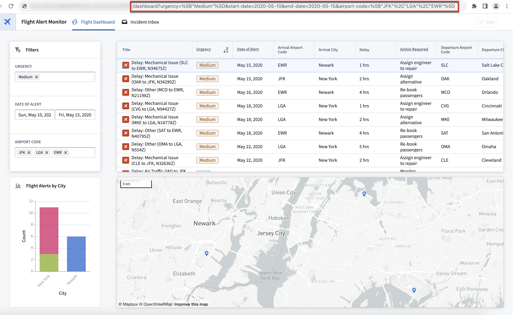

Workshop routing enables specific states or views of a module to be written to the URL, allowing users to easily share these views with others through link sharing.

To enable routing for your Workshop module, navigate to the Pages section of the Settings panel on the left and toggle on the Enable routing option.
The Pages section displays an overview of the pages used with routing and provides an additional panel that showcases the variables in use, as shown below.

With routing enabled, the ID of the current page will be written to the URL. For pages without a defined page ID, no page ID will be written to the URL; users will be returned to the module's default page on page load.

You can also use routing to save and share variable values that are configured for use with the module interface. With routing enabled, the current values of variables configured with a routing URL update behavior are written directly as URL query parameters.
To include a module interface variable in the URL, use one of the following configuration options.
If a query parameter key matches the external ID of a module interface variable, the value of the query parameter will be used as the variable's initial value, regardless of URL inclusion behavior configured.

The following variables types are unable to be used in the URL:
However, you can define the above variables types indirectly using other routing variables. For instance, you can create a string variable used with routing and define the default value of an object set filter variable using this string variable.
Embedding a Workshop module does not carry over the routing configuration of the embedded module. To use variable values from an embedded module with routing, add the desired variables to the child module's module interface and pass in routing variables from the parent module in the embedded module configuration.